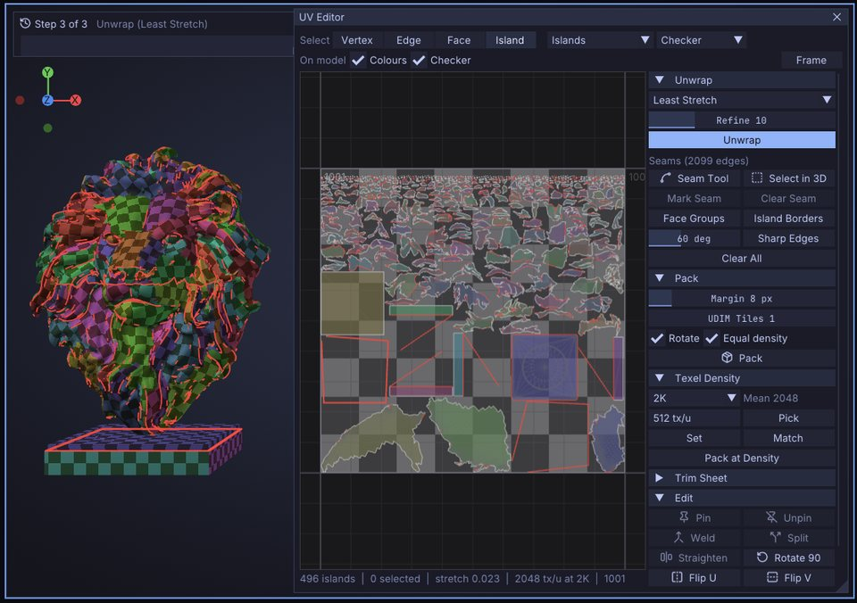
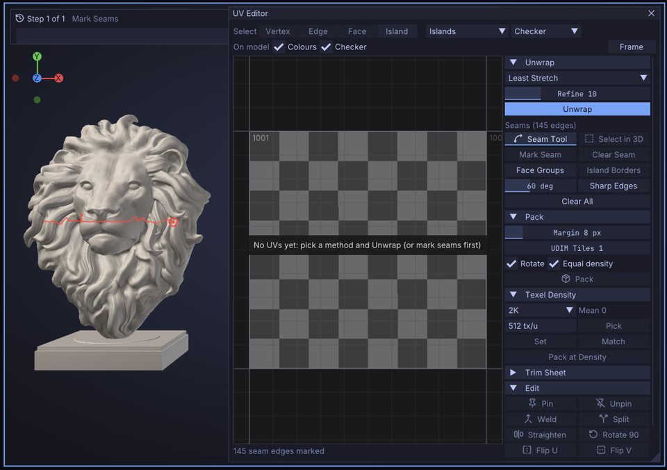
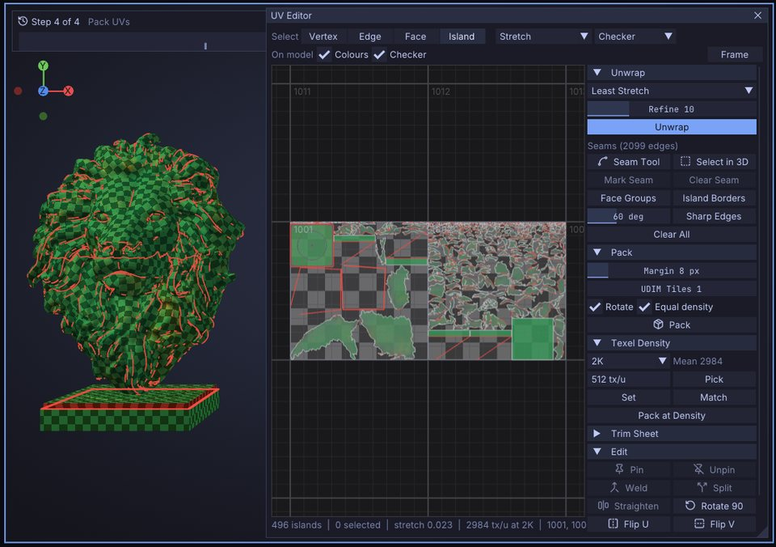
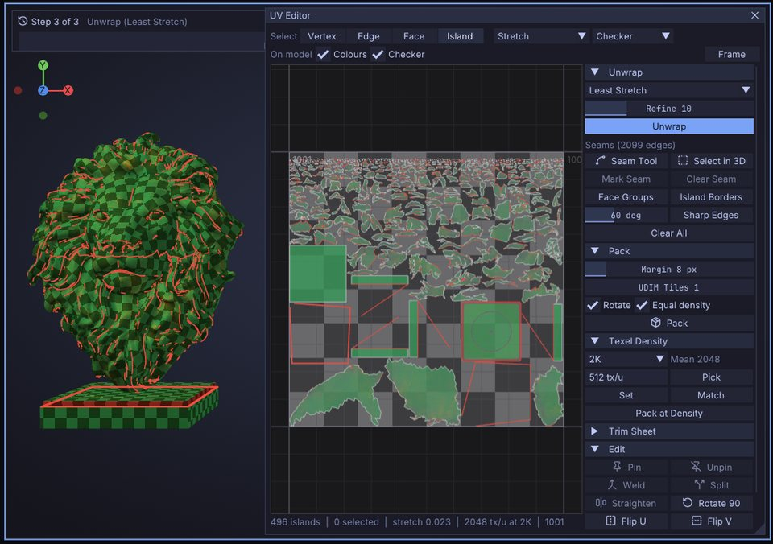
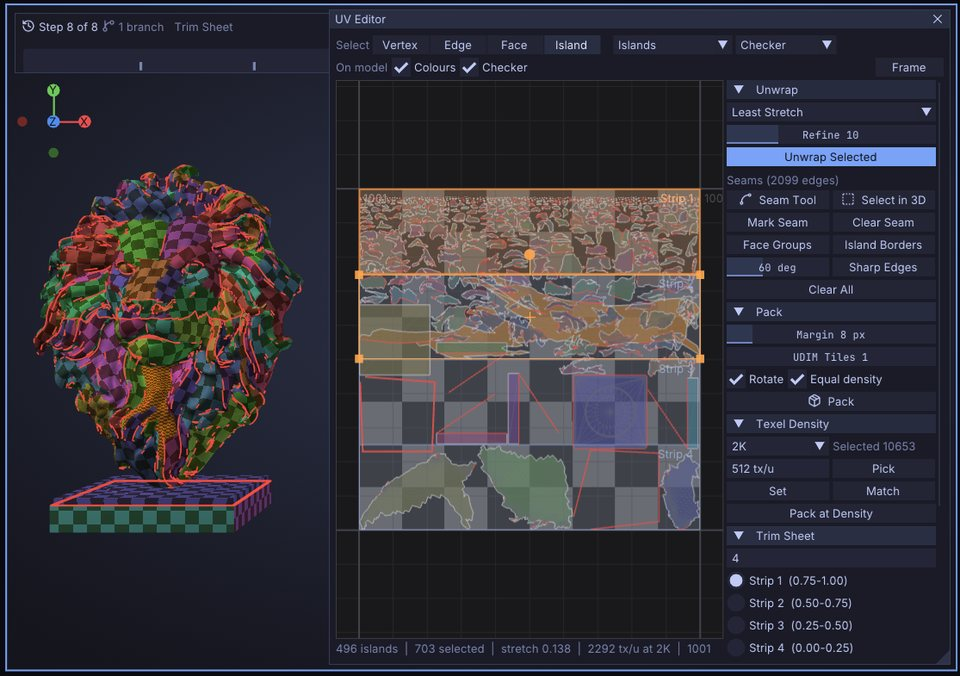

UV Editor
The UV Editor shows a Part's UVs flat, over the texture's tiles, and gives you everything to make them: seams drawn on the model, unwrapping that keeps the surface's shape, packing into one tile or across UDIM tiles, texel density, trim sheets, and hand editing of vertices, edges, faces and islands. While you work, the model shows the same colours and a checker, so stretch and density show up on the surface the moment they appear, and a painted texture can move with every edit so the model keeps its look.
Open it with Tool > Texture Map > UV Editor, or Alt+U. It opens over the right of the canvas with the model moved to the left; drag its title bar or its edges to place it anywhere.


The window#
- Select (top left): what clicks pick, Vertex, Edge, Face or Island (1-4 while the pointer is over the view). The selection converts when you switch.
- Colours: what the faces show, in the view and on the model: Islands (a colour each), Stretch, Density (texel density) or Plain.
- Image: what's behind the layout: nothing, a Checker, or the Part's painted Texture (tile 1001).
- On model: Colours shows the same colours on the model, Checker lays a checker on its UVs (a square per 32 texels of the texture, tinted per UDIM tile). Squares that stay square mean no stretch.
- Frame (F over the view) fits the selection, or the whole layout, in the view; Home shows tile 1001.
- The status line under the view: islands, what's selected, the mean stretch, the texel density and the UDIM tiles in use.
- The sections on the right: Unwrap (with the seams), Pack, Texel Density, Trim Sheet, Edit and Display.
The view is drawn by the graphics card, so a million-triangle layout pans, zooms and moves as smoothly as a small one. Scroll to zoom (around the pointer); drag with the right or middle button to pan. The UDIM tile numbers are written in each tile's corner.
Selecting#
- Click to select (Shift adds, Ctrl removes); drag on an empty spot for a box. In Island mode the box picks every island it touches; in Face mode the faces inside it.
- A selects everything, Alt+A nothing, Ctrl+I inverts.
- Select in 3D (Unwrap section): click or drag over the model to select there, in the current mode; Shift adds, Alt removes. The selection shows orange in both views.
Moving a vertex moves all of its corners that are joined in UV space, so islands stay in one piece while you edit them; edges along a seam move each side on its own.
Moving, rotating and scaling#
The selection has a box with handles: drag inside it to move, a corner to scale, the knob above it to rotate. Or press G (move), R (rotate) or S (scale) over the view, move the mouse, and click (or Enter) to finish; a right click or Esc puts it back. During G and S, X or Y locks to one axis; Ctrl snaps (1/64 of a tile, 15 degrees, tenths of the size). The model's stretch colours and checker follow the drag live. Each drag is one undo step.
Seams#
Seams are the edges Unwrap cuts along. They show in red on the model while the UV Editor is open, and in red in the view.
- Seam Tool: drag along the model over the edges you want cut. Each stretch follows the shortest edge path from where the last one ended, so you can draw a loop around an arm in a few strokes. Alt+drag clears seams the same way. A ring under the pointer shows the vertex the next stretch starts from.
- Mark Seam / Clear Seam: the selected edges, or the border of the selected faces.
- Face Groups: every face group border becomes a seam.
- Island Borders: the borders of the current UV islands become seams (keeps an imported layout's cuts).
- Sharp Edges: every edge sharper than the angle beside it (hard-surface models).
- Clear All.


Unwrapping#
Pick a method and click Unwrap. With faces selected it says Unwrap Selected: only those are unwrapped, and their new islands are fitted where the old ones were; otherwise the whole Part is unwrapped and packed.
| Method | What it does |
|---|---|
| Least Stretch (the default) | Cuts along the marked seams and flattens each piece keeping both angles and lengths (a conformal start, then as-rigid-as-possible steps). The best all-round choice |
| Conformal (LSCM) | Keeps angles exactly; big curved pieces get smaller towards their ends |
| By Face Groups | Least Stretch, also cut along every face group border: group the model, then unwrap |
| Planar | Projects each piece flat along its mean direction: for flat panels and decals |
| Unfold Islands | Flattens the current islands again where they are, keeping pinned UVs in place: relax after editing |
| Auto Seams | Finds its own seams (as Auto UV does), for models you don't want to cut by hand |
Refine sets how many least-stretch steps run (more keeps lengths better; 0 is plain conformal).
You don't have to cut everything yourself: a piece that is closed (a sphere), a tube or has holes gets the extra cuts it needs automatically, a closed shell split across its middle and a tangled piece cut into charts the way Auto Seams would. Without marked seams, a Part that already has UVs is cut along its current island borders. Unwraps of big meshes run in the background with their progress over the view; a million triangles take a few seconds.
Packing and UDIM tiles#
Pack lays the selected islands (or all) out as large as they fit: each turned to its smallest box, scaled to one texel density (Equal density; off keeps their sizes relative to each other), with Margin texels between them. Rotate also allows quarter turns. SculptForge tries packing by the islands' outlines and by their boxes and keeps whichever holds them larger.
UDIM Tiles spreads the islands over that many tiles, 1001, 1002 and on (ten per row, as UDIM numbers go), each island at the same texel density: more tiles, more texels for everything. Pack at Density instead keeps exactly the target texel density and opens as many tiles as it needs.


Texel density#
Texel density is how many texels of the texture cover a unit of the surface. The Texel Density section shows the selected islands' density (or the mean) at the texture's size (or the size you choose when there is no texture yet), and the Density colours show it on every face: green is the mean, blue fewer texels, red more.
- Set: scale the selected islands (or all) to the target density (texels per unit).
- Match: give them all their mean density, so a detail looks the same size everywhere.
- Pick: take the target from the selection.
- Pack at Density: pack at exactly the target (see above).


Trim sheets#
A trim sheet is a texture made of horizontal strips (a moulding, a belt, a seam of rivets), each repeating left to right. In Trim Sheet, describe the strips: a count (4 equal strips), heights from the top (0.5,0.25,0.25) or v ranges (0-0.5;0.5-1); they show over tile 1001 while the section is open. Pick a strip and click Assign to Strip: the selected islands are turned lengthwise, scaled to the strip's height and lined up along it from the left. Fit width squeezes or stretches the row to fill the strip exactly; off, it keeps its proportions and may run past the right edge, which is fine on a trim that repeats.
The texture doesn't move for trims: the islands take on the strip's look.


Editing#
| Button | Over the view | What it does |
|---|---|---|
| Pin / Unpin | P / Alt+P | Pinned UVs (blue dots) stay where they are when you Unwrap or Unfold |
| Weld | W | Selected vertices that meet across a seam become one UV each, and the seam between them goes |
| Split | Y | The selected edges, or the border of the selected faces, become seams, so those faces move on their own |
| Straighten | The selected vertices (a border, an edge loop) line up on one horizontal or vertical line | |
| Rotate 90 | A quarter turn of the selection (or everything) | |
| Flip U / Flip V | Mirror the selected islands left to right or top to bottom |
A good relax workflow: straighten or move the borders you care about, pin them, then Unfold Islands.
Paint stays on the model#
Paint stays on the model (at the bottom of the sections, on by default): when the Part has a painted texture, every UV edit (unwrap, pack, a drag, density, weld...) moves the paint onto the new layout in the same undo step, every texture layer with it, so the model looks exactly the same. Undo brings back the old UVs and the old texels. Turn it off when you want the UVs to pick a different part of the texture (as trim sheets do); the trim command leaves it off by default.
Undo#
Every UV operation is one undo step (Ctrl+Z), drags included: the UVs, seams and pins, and the texture when it moved with them. Seams and pins are saved with the project.
Scripting#
Every operation is a command, for scripts, sculptforge-cli, Python (sf.run(doc, "uv_unwrap", method="isometric")) and the AI assistant. "The selection" is the UV Editor's (set it with uv_select); with nothing selected the commands work on the whole Part.
| Command | What it does |
|---|---|
uv_unwrap | Unwrap: method=isometric (Least Stretch), conformal, polygroups (By Face Groups), planar, unfold or auto; iterations=, selected=, tiles=, margin=, rotate=, density=, pack=false (fit in place), keep_texture= |
uv_pack | Pack: margin= (texels), tiles= (UDIM tiles), first_tile=, rotate=, equal_density=, density= (texels per unit, as many tiles as needed), resolution=, keep_texture= |
uv_seam | Seams: op=mark / clear (the selection), path from= to= (shortest edge path between two vertices; clear=true), polygroups, islands, angle angle=60, clear_all |
uv_select | op=all, none, invert, island face=, face face=, polygroup group=, rect u0= v0= u1= v1=, seams, mode; mode=vertex/edge/face/island, add=true |
uv_transform | move_u=, move_v=, rotate= (degrees), scale=, scale_u=, scale_v= about the selection's centre |
uv_edit | op=pin, unpin, clear_pins, weld, split, straighten, flip_u, flip_v |
uv_density | op=set value=, op=match (match=mean or first), op=info; resolution= |
uv_trim | strip=2 strips=4 (or 0.5,0.25,0.25 or 0-0.5;0.5-1), fit_width=, margin= |
uv_info | Islands, seams, pins, texel density, the UDIM tiles in use and the mean stretch |
uv_seam op=polygroups
uv_unwrap method=isometric
uv_pack tiles=2 margin=8
uv_density op=match
uv_infoLimits#
- Texture painting paints tile 1001 (UVs between 0 and 1); islands in other UDIM tiles are laid out, measured and exported, but painting them comes later.
- Packing works on islands' outlines when there are enough of them and the mesh isn't huge; otherwise on their boxes (a little less tight).
See also#
- Texture painting: paint on the UVs
- Baking: bake maps onto them
- Exporting: UVs go out with OBJ, glTF, FBX and USD